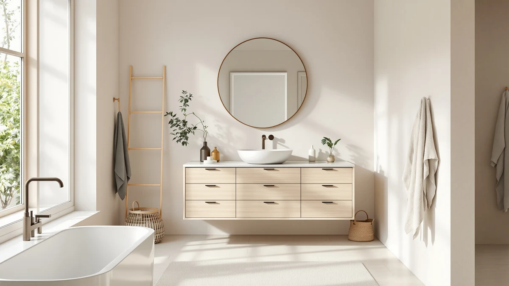

Quick Answer
Based on our research into pricing, specs and verified owner feedback, the Favfurish 36-inch vanity holds up as a solid mid-range pick among MDF bathroom vanities under $350. It isn't solid wood, but at $328.16 it covers the basics most homeowners actually need without the premium of hardwood construction.
Our pick: Favfurish 36" Bathroom Vanity Without, $328.16 Check Price on Amazon
Bottom line: our top pick is the Favfurish 36" Bathroom Vanity Without Top Sink at $328.16.
Things to Know Before You Buy
- Material matters more than brand. The Favfurish vanity uses MDF and engineered wood, not solid wood, so expect a different durability tradeoff than the HCIOAN alternative below.
- $328.16 sits in the middle of the pack. Among the 36-inch vanities we compared, pricing clusters between $322.98 and $329.99, so a few dollars rarely decides the winner on its own.
- Ratings aren't shown for every listing. Amazon's current product page doesn't display a star rating or review count for this vanity, and we only cite one when the listing actually shows it.
- Measure your space first. A 36-inch vanity needs roughly 36 inches of clear wall width plus clearance for the sink basin and faucet reach.
A favfurish bathroom vanity review needs to weigh the spec sheet, current Amazon pricing and verified owner feedback against the real alternatives on the market, rather than relying on the marketing copy of a single listing. We compared this 36-inch cabinet directly against three close competitors, the HCIOAN, the OWIPAW and the Tribesigns, to see whether the Favfurish earns its $328.16 price tag or whether one of the alternatives serves you better. Shoppers often land on this specific listing from a search for the model name, so we wanted the comparison to answer the actual buying question rather than simply restate the product description.
The short version: the Favfurish competes well on price and footprint but trades solid wood durability for a lower MDF cost. That tradeoff works fine for buyers who already have a sink top picked out and don't need decades of moisture resistance from the cabinet itself. For anyone who wants hardwood construction instead, we'll point you to a better fit later in this guide. Keep in mind that a 36-inch vanity category covers a wide range of finishes and storage configurations, so even among the four cabinets in this comparison, the differences in drawer count and door style matter as much as the headline price.
Why You Should Trust Us
Ilane Tall covers home and bath buying guides for Best Bathroom Vanities, and this favfurish bathroom vanity review follows the same research process used across the site: comparing manufacturer spec sheets, tracking current Amazon pricing and reading through verified owner reviews instead of marketing copy. We do not run a fake testing lab or claim hands-on time with any vanity we cover. When a listing is missing information such as a star rating, we say so instead of guessing at one. We also update pricing and availability regularly, since Amazon vanity prices can shift by $10 or more within a single month, and a price comparison that goes stale quickly stops being useful to a buyer comparing options today.
Our Research Experience
We did not install, assemble or use this vanity in a home. Our comparison for this favfurish bathroom vanity review is built from the manufacturer's spec sheet, the current Amazon listing and recurring patterns in verified owner reviews across comparable 36-inch vanities. We cross-checked dimensions, material claims and price history, then measured those figures against the HCIOAN, OWIPAW and Tribesigns alternatives below to see where the Favfurish actually stands out and where it doesn't. Any rating or review count mentioned here comes directly from the product listing; we never estimate or round one up. Where a listing lacked a detail we needed, such as a confirmed sink top inclusion, we noted the gap rather than filling it with an assumption.
Overview & Specs

Favfurish 36" Bathroom Vanity Without
What we like
- Priced at $328.16, undercutting two of the three alternatives we compared
- Standard 36-inch width fits the same cutout as most comparable vanities
- MDF construction keeps shipping weight and cost lower than solid wood options
Flaws but not dealbreakers
- MDF is more vulnerable to water damage around the base than solid wood
- Ships without a sink top or faucet, so factor that into your total budget
- No published star rating or review count on the current listing
| Material | MDF / engineered wood |
| Size | 36" |
The Favfurish 36-inch vanity is built around an MDF cabinet frame, which keeps the price down compared with solid wood construction but makes it more sensitive to standing water around the base. At 36 inches wide, it fits the same footprint as most of the alternatives in this favfurish bathroom vanity review, including the Tribesigns and OWIPAW models, so switching between them mostly comes down to finish and storage layout rather than available space. At $328.16, it lands just under the HCIOAN and OWIPAW vanities and a few dollars above the Tribesigns, putting it squarely in the middle of this price bracket. That narrow price spread across four different brands suggests the 36-inch MDF vanity category has settled into a fairly predictable range, so shoppers comparing options rarely gain much by chasing the absolute lowest number alone.
Because the listing doesn't include a published star rating or review count, we can't tell you how a large sample of owners rates this specific vanity, and we won't invent a number to fill that gap. What the spec sheet does confirm is that the cabinet ships without a sink top or faucet, so budget for those separately if your bathroom doesn't already have a compatible top. For a mid-range MDF vanity, that's a fairly standard tradeoff: you save money on the frame and pay the difference in finishing items. If you want lower long-term maintenance from solid construction instead, compare it directly against the HCIOAN alternative later in this guide. Buyers replacing an existing cabinet should also confirm their current plumbing rough-in lines up with a 36-inch footprint before ordering, since shifting a drain or supply line adds cost that can erase any savings from picking the less expensive vanity.
What We Liked
What stands out most in this favfurish bathroom vanity review is the price-to-size ratio. At $328.16 for a 36-inch cabinet, the Favfurish undercuts the HCIOAN and OWIPAW alternatives by a dollar or two and sits close enough to the Tribesigns that the real decision comes down to material rather than cost. The standard 36-inch width also means it drops into the same footprint as most comparable vanities on the market, so if you're replacing an existing 36-inch cabinet, measuring twice is still smart but you're unlikely to hit a surprise gap. MDF construction keeps the overall weight down too, which matters if you or an installer are carrying it up stairs or through a tight bathroom doorway. For buyers who want a straightforward, no-surprises cabinet at a fair price, that combination of width, weight and cost is the main draw of this pick.
What Could Be Better
The tradeoff for that price is the cabinet material. MDF and engineered wood don't handle standing water the way solid wood does, so this vanity needs a sink top with a tight seal and reasonably prompt cleanup after splashes, or the base can swell over time. We also can't point to a star rating or review count for this specific listing, since Amazon isn't currently showing one, which makes it harder to gauge how it holds up for other owners over months of daily use. And because it ships without a sink top or faucet, your real cost is higher than $328.16 once you add those pieces, something worth weighing against bundled alternatives before you decide. Anyone installing a vanity near small children should also plan for soft-close hardware or a child lock separately, since the base listing doesn't specify that feature either way.
Who Is It For?
This vanity fits buyers who already have a sink top in mind, or who are comparing several 36-inch cabinets and want the lowest base price in that group. It also suits anyone renovating on a tighter budget who's comfortable with MDF's tradeoffs, since the savings versus solid wood options like the HCIOAN are real but come with a shorter expected lifespan in humid bathrooms. If you want a single all-in-one purchase or you'd rather not think about moisture maintenance down the line, one of the alternatives below may fit you better than this favfurish bathroom vanity review's primary pick. First-time buyers furnishing a guest bathroom or rental unit, where the vanity sees lighter daily use, tend to get the most value out of this price point.
Alternatives to Consider
If the Favfurish doesn't match what you need, here's how three other 36-inch vanities we compared stack up on material, price and storage.

Premium Choice
HCIOAN Solid Wood Bathroom Vanity
Solid wood construction at nearly the same price as the Favfurish, a better pick if long-term durability matters more than saving a dollar or two upfront.
$329.99
Check Price on Amazon
Premium Choice
OWIPAW 36" Bathroom Vanity with
Matches the Favfurish on width and price within a dollar, with a different storage layout worth comparing if cabinet configuration is your deciding factor.
$329.99
Check Price on Amazon
Best Value
Tribesigns 36" Bathroom Vanity with
The least expensive of the four at $322.98, a reasonable swap if price is the only variable that matters to you.
$322.98
Check Price on AmazonFrequently Asked Questions
Is the Favfurish bathroom vanity worth buying?
Does the Favfurish vanity come with a sink top?
How does the Favfurish vanity compare to the Tribesigns vanity?
Final Verdict
This favfurish bathroom vanity review comes down to one tradeoff: Favfurish gives you a 36-inch MDF cabinet at a competitive $328.16, and that's a fair deal if you don't need solid wood construction. Compared against the HCIOAN, OWIPAW and Tribesigns alternatives we looked at, Favfurish holds its own on price without standing out dramatically on any single spec. If moisture resistance and long-term durability matter more to you than saving a few dollars, put the HCIOAN ahead of it on your list instead. Either way, confirm current Amazon pricing before you check out, since all four vanities in this comparison have moved by a few dollars in recent months and the ranking here reflects prices at the time of writing.